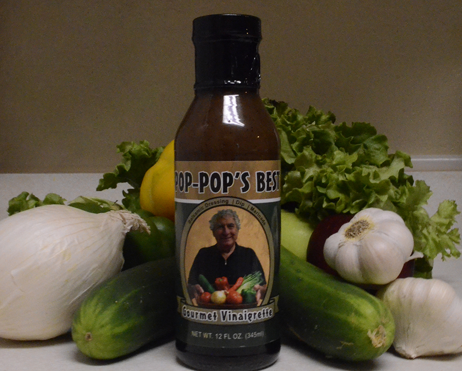

Pop-Pop's Best

For years my family and friends have enjoyed my homemade salad dressings, dips, and marinades. They urged me to market my creations for everyone's emjoyment. I've created POP-POP'S BEST for exactly this purpose
Now you can enjoy POP-POP'S BEST in your own home!
My NEW Balsamic Gourmet Vinaigrette will dazzle your tast buds with a unique combination of flavors, sweetness, and a little zing. The amazing Balsamic dressing easily doubles as a fine marinade for meats and vegetables.
Enjoy it and please use the Guestbook to tell your story and let others know how you liked it.
Lee "Pop-Pop" Licht